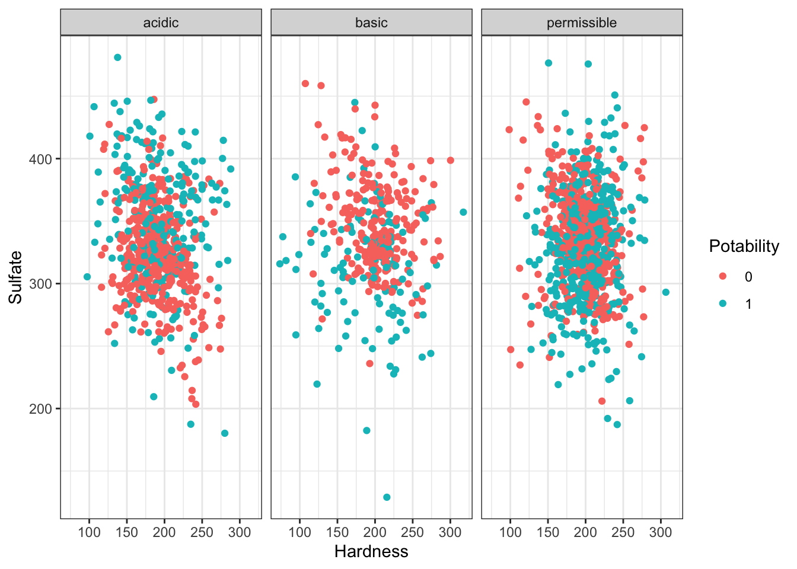

6 Review with Datasaurus Dozen
The Datasaurus Dozen dataset is a handful of data points that complement the dplyr package. Aside from functions, packages can also import objects.
## dataset x y
## Length:1846 Min. :15.56 Min. : 0.01512
## Class :character 1st Qu.:41.07 1st Qu.:22.56107
## Mode :character Median :52.59 Median :47.59445
## Mean :54.27 Mean :47.83510
## 3rd Qu.:67.28 3rd Qu.:71.81078
## Max. :98.29 Max. :99.69468## # A tibble: 6 × 3
## dataset x y
## <fct> <dbl> <dbl>
## 1 wide_lines 34.7 19.6
## 2 wide_lines 33.7 26.1
## 3 wide_lines 75.6 37.1
## 4 wide_lines 40.6 89.1
## 5 wide_lines 39.1 96.5
## 6 wide_lines 34.6 89.6##
## away bullseye circle dino dots h_lines high_lines
## 142 142 142 142 142 142 142
## slant_down slant_up star v_lines wide_lines x_shape
## 142 142 142 142 142 142There are 13 different datasets in this one object. We will use tidyverse functions to take an overview look at the object, grouped by the datasets.
datasaurus_dozen %>%
group_by(dataset) %>%
summarize(mean_x = mean(x),
mean_y = mean(y),
std_dev_x = sd(x),
std_dev_y = sd(y))## # A tibble: 13 × 5
## dataset mean_x mean_y std_dev_x std_dev_y
## <fct> <dbl> <dbl> <dbl> <dbl>
## 1 away 54.3 47.8 16.8 26.9
## 2 bullseye 54.3 47.8 16.8 26.9
## 3 circle 54.3 47.8 16.8 26.9
## 4 dino 54.3 47.8 16.8 26.9
## 5 dots 54.3 47.8 16.8 26.9
## 6 h_lines 54.3 47.8 16.8 26.9
## 7 high_lines 54.3 47.8 16.8 26.9
## 8 slant_down 54.3 47.8 16.8 26.9
## 9 slant_up 54.3 47.8 16.8 26.9
## 10 star 54.3 47.8 16.8 26.9
## 11 v_lines 54.3 47.8 16.8 26.9
## 12 wide_lines 54.3 47.8 16.8 26.9
## 13 x_shape 54.3 47.8 16.8 26.9All of the datasets have roughly the same mean and standard deviation along both the x and y axis.
Let’s take a look the data graphically. We will use filter to extract the rows belonging to one dataset and then pipe that directly into a ggplot. Both dplyr and ggplot are developed within “the Tidyverse” and can use pipes, but you may not be able to pipe in base R functions or functions from different packages.
datasaurus_dozen %>%
filter(dataset == "star") %>%
ggplot(aes(x=x, y=y)) + # PLUS SIGN, NOT PIPE FOR THIS ONE
geom_point()
Tidyverse’s data wranging packages use the pipe %>% to move the previous output to the next line, where as ggplot uses the plus sign +
Try editing the code above to display different datasets. Notice how different groups of data points can all give similar statistical summaries - so it’s always a good choice to visualize your data rather than relying on just numbers.
If we wanted to take a look at all of the datasets at once, we can also use the facet_wrap() function.
datasaurus_dozen %>%
#filter(dataset == "star") %>% REMOVE THIS ROW
ggplot(aes(x=x, y=y)) +
geom_point() +
facet_wrap(~dataset)+ theme_void() # ADD THIS LINE
## # A tibble: 6 × 3
## dataset x y
## <fct> <dbl> <dbl>
## 1 dino 55.4 97.2
## 2 dino 51.5 96.0
## 3 dino 46.2 94.5
## 4 dino 42.8 91.4
## 5 dino 40.8 88.3
## 6 dino 38.7 84.96.1 Genearlizable code
A major strength of programming is the ability to automate repetitive tasks. As a general rule of thumb, if you need to do a task more than three times (ex. analyzing multiple PCR plates or integrating clinical data from multiple days), it is worth it to invest time to write generalizable code or a custom function.
Now that we’re getting comfortable writing code, we will spend some time revisiting code that we wrote to make them generalizable and even better! Generalizable means that the code is flexible and can be applied to multiple similar objects. For example, if we’re running a clinical study and we have patient demographic data from multiple sites, we want to check that the mean patient demographic is comparable between sites by creating similar plots of each hospital site to compare. If we write code for one location and then copy and paste it into another code chunk to apply to the next location, the code may require some modification before it works.
Generalizable code begins at data collection. Depending on your workflow, you may or may not be able to influence this stage of the analysis. If possible, it is best practice to keep the column names and entries for categorical variables consistent. For example, when recording the age of patients, “6”, “6”, “six”, and “Six” are all considered different levels of the factor so you will need to either make sure data collection is consistent or check and correct these inconsistencies in your code. Get into a habit of checking your work. Whether it is code you’ve written yourself, code you you’ve been sent by a collaborator, or published data from a biobank - never assume the data is as you predicted.